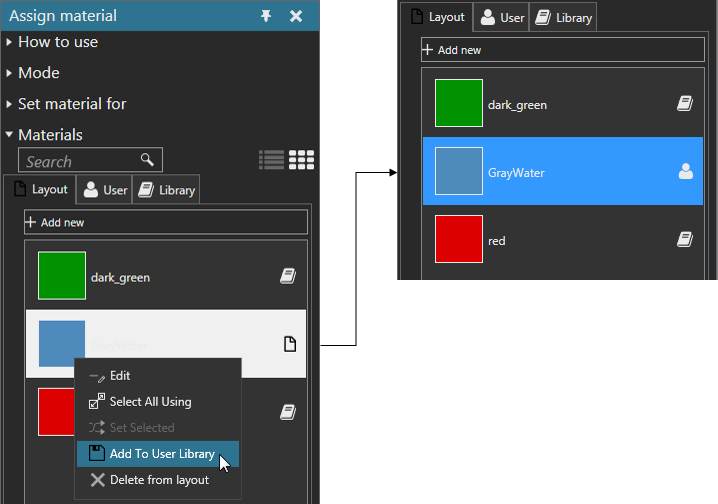

You can add a material to a user library. The material must be available in the current layout of the 3D world and not already stored in user and system libraries. The material is saved in a Materials.xml file stored in the My Materials folder of your R-Pro 2.1 documents.
Example. Add a layout material to user library
